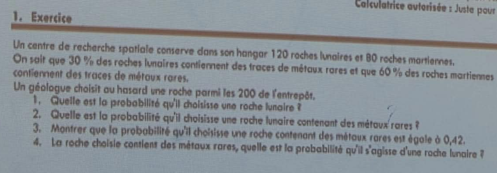

Probabilités · Exercice · Chapitre 2
Probabilités conditionnelles,
probabilités totales, formule de Bayes
Un centre de recherche spatiale conserve dans son hangar 120 roches lunaires et 80 roches martiennes.
On sait que 30 % des roches lunaires contiennent des traces de métaux rares et que 60 % des roches martiennes contiennent des traces de métaux rares.
Un géologue choisit au hasard une roche parmi les 200 de l'entrepôt.
